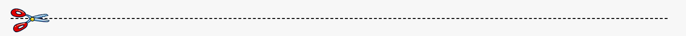
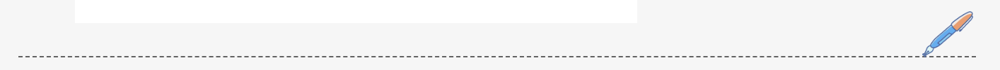
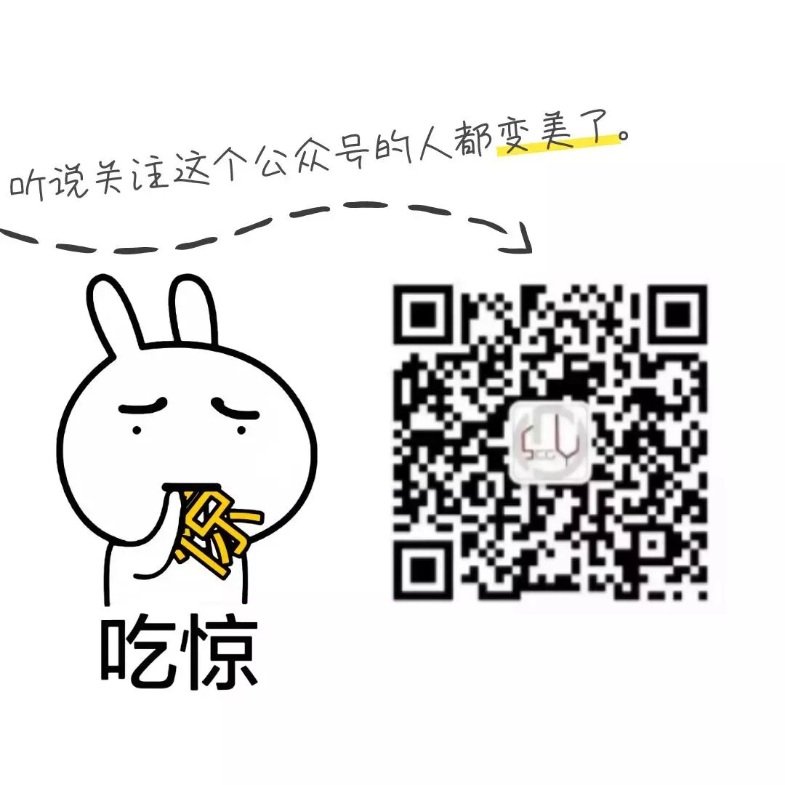

发布时间:2019-09-11
第十二届学生会全员大会顺利召开
2019级中国科大少年班学院学生会第一次全体会议于2019年9月11日正午十二点在2105教室顺利进行。

办公室19级詹昊延同学主持会议
Part One
首先,学生会主席陈心安介绍了学生会的工作性质，使各位初入学生会的同学们得以大致了解学生会。
他分析了学生会的工作流程、组织架构和人事管理制度，希望消除同学们对学生会工作的陌生感。
此外，在主席讲话的最后，给大家分享了在科大校园生活的经验，使同学们感到温暖。
学生会主席陈心安介绍经验
Part Two
随后，宣传部前任部长杨天健为各位同学培训文案写作基础，充分介绍了关于文案的分类与不同类别文案的书写方法。
杨天健同学演讲幽默风趣，引起阵阵笑声和掌声，给同学们留下了深刻的印象。
杨天健培训写作基础
Part Three
最后文体部部长张世融简要布置了晚上的场务会的任务。至此，所有讲话完毕。
在全体与会同学合影留恋之后，第一次全员大会圆满结束。
第十二届学生会全体同学合影

新的学期已经开始，学校各项工作逐步展开，学生会的正常运行将为同学们提供更为丰富的活动和更为全面的服务。
希望全体新干事们积极参加各个活动,留下美好的回忆。

by.SCGY-SU

摄影：宣传部 谢禛
文字：宣传部 小心思
编辑：宣传部 紫萸香慢